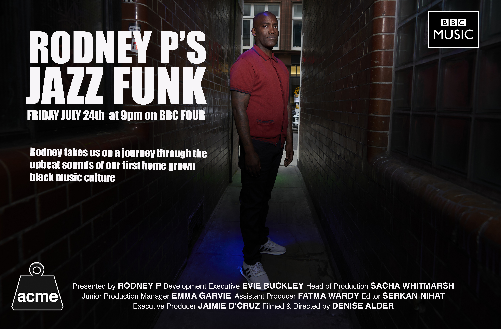

The Jazz Room (1987)
Sound sync Super 8 mastered on DV Cam. 40 mins
The Jazz Room, shot on Super 8, completed in 1987, was about the development of jazz dance at The Electric Ballroom, Camden.
At the start of each night 'the film so far’ was projected above the dance floor, before continuing to shoot more material to incorporate into the film.
This created an interaction between the dancers and the film that informed the development of the dance style.
It premiered in 1986 at The Leicester Super 8 Film Festival and has more recently screend in 2005 within assume vivid astro focus featuring Dick Jewell at Tate Gallery Liverpool,
Cargo in 2009 as part of Drum Festival's 'Beyond The Ballroom and at Kunsthalle Zurich in October 2009.
Its latest screeening was on Sunday 13th June 2010 at The MAC (Midlands Art Centre) Birmingham at 4:00pm
at the event Beyond The Ballroom, with a Q&A hosted by Snow Boy.
The Jazz Room (excerpt)

After the MAC screening 13 June 2010 © Damian Brown
Also featured in Rodney P’s Jazz Funk